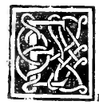

CAPITOLO LVII¶
Commo in la spera se collochino tutti li 5 corpi regulari.

E in questa spera excelso Duca se ymaginano tutti li 5 corpi regulari in questo modo, prima del tetracedron se sopra la sua superficie cioè la sua spoglia euer veste se segnino ouer ymaginano 4 ponti equidistanti per ogni verso luno da laltro. e quelli per 6 linee recte se congionghino le quali de necessita passeranno dentro dala spera sira formato aponto el corpo predetto in epsa. E chi tirasse el taglio per ymaginatione con vna superficie piana per ogni verso secondo diete linee recte protraete remarebe nudo aponto dicto tetracedron.
Commo (acio per questo glialtri meglio se aprendino) sela dieta spera fosse vna pietra de bombarda e sopra lei fossero dicti 4 ponti con equidistantia segnati se vno lapicido ouer scarpellino con suoi ferri la stempiasse ouer sfaciasse lasciando li dicti 4 ponti a donto de tutta dieta pietra arebe facto el tetracedron. Similmente se in dieta superficie sperica se segni 8 ponti equidistanti fra loro lun dalaltro e laltro daluno.
E quelli con 1 2 linee recte se congionghino sira per ymaginatione in dieta spera collocato el secondo corpo reguläre detto exacedron onero cubo, cioè la ügura del diabolico instrumento dicto taxillo. Liquali ponti similmente segnati in vna preta de bombarda a modo dicto. E quelli continuati per vn lapicida amodo che disopra ara redutta dieta balotta a forma cubica. E se in dieta superficie se notino 6 ponti pur secondo ogni loro equidistantia commo se dicto chi quelli continuara ouoi dir congiognera con 12 linee recte sira aponto in dieta spera facto el terzo corpo reguläre detto octocedron, Ghel simile facto in su vna detta pietra el lapicida duna balotta ara facto el corpo de 8 basi triangulär!
E cosi sei se segnino 12 ponti quelli continuati per 3o recte linee ara similiter in dieta spera el quarto corpo detto ycocedron. collocato, el simile el lapicida ara redocta la pietra al corpo de 20 basi triangulari. E se 20 ponti se notino a modo dicto continuandoli pure con 30 linee recte sira formato in dieta spera. El quinto e nobilissimo corpo reguläre detto duodecedron cioè corpo de 12 basi pentagonali. E cosi el lapicida de dieta balotta arebe facto la medesima forma.
Onde con simili ymaginatione tutti scranno in la spera collocati in modo che le lor ponti angulari siranno in la superficie sperica situati e toccando vno deli loro angoli in la spera subito tutti toccano, e non e possibile per alcun modo che vno tocchi senza laltro. quando dicto corpo in spera sia collocato. E per questa scientia infallibile porrà V. celsitudine ale volte (commo noi habiamo vsato) con dicti lapicidi hauer solazzo in questo modo arguando loro ignoranza.
Ordinandoli che de queste simil pietre ne facino qualche forma de lati facie e anguli equali, e che niuna sia simile ale 5 deli regulari. verbi gratia obligandoH a fare vn capitello o basa o cimasa a qualche colonna che sia de quatro o de sei facce equali amodo dicto e che quella dele 4non sienno triangule onero quelle dele 6 non sienno quadrate. E cosi de 8 e 20 facce e niuna sia triangula ouer de 12 e niuna sia pentagona, lequali cose tutte sonno impossibile. Ma loro commo temerarii milantatori diranno de far Roma e toma maria e montes che molti sene trouano che non sano ne curan de imparare, contra el documento morale che dici.
Ne pudeat qual nescieris te velie doceri. El simile quel carpentieri domandato che farebe non si trouando pialla, respose farne con vnaltra. E laltro marangone disse la sua squadra essere troppo grande per giustare vna piccola persuponendo gliangoli recti fraloro variarse. E quello che posto li doi verghette equali in forma de tau. cioè cosi. T. in nanze aii occhi suoi, ora vna ora laltra più longa giudicaua. E altri assai simili capassonii.
Commo de questi tali al tempo dela fabrica del palazzo dela bona memoria del conte Girolymo in Roma in sua presenza confabulando commo acade discorrendo la fabrica siandoui molti degni in sua comitiua de diuers.e facoltà fraglialtri a quel tempo nominato pletore Melozzo da F”rulli per dar piacere ala speculationc c.hortamo Melozzo e io el conte chel facesse fare vno certo capitello in vna de queste forme non chiarando noi al Conte la difficulta ma solo che seria degna cosa. E a questo asentando el Conto chiamo a se el maestro e disselile *) se lui lo sapesse fare, quel rispose questo esser piccola facenda e che nauia fatte più volte.
Diche el Conte dubito non fosse cosa degna commo li commendauamo. Noi pur affermando el medesimo giognendoui apertamente che non lo farebbe per la impossibilita sopra aducta. E rechiamando a se dicto lapicida (che a quel tempo anco eran denominati) lo redomando se lo facesse. Alora quasi sbeffando surise breuiter al si e al non sempre fia ponto lo impegnare. El Conte li disse se tu noi fai che votu perdere? E quello acorto respose non male Signore quel tanto più cha V. illustrissima Signoria pare de quel chio posso guadagnare e rimasero contenti asegnatoli termene 20 di e lui chiedendo quatro.
Acade che guasta molti marmi e feci vn o più abaco, finaliter el Conte non lobligo se non al danno dele pietre e rimase scornato. Ma non cesso mai che volse sapere lorigine dela proposta. E seppe essere el frate in modo che non poco rancore dapoi me porto e trouandome me dixe raeser meser io non vi perdono, dela iniuria facta se non me insegnate el muodo a farla e io meli offersi quanto valeuo e per più giorni stando in Roma non li fui vilano. e aprieli de queste e daltre cose a lui pertinenti. E quel cortese volse che vna degna cappa a suo nome mene protasse.
Cosi dico che ale volte simili a Vostra celsitudine sonno cagione fare acorti altri de loro errore e non con tante millantarle venirli alor conspecto quasi ognaltro spregiando. Cosi già feci Hierone con Simonide poeta, commo recita Cicerone in quel de natura deorum. El qual Simonide temerariamente se obligo in termene de vno diale spacio saperli dire aponto che cosa era dio e diceua non esser quella difficulta chaltri dici asaperlo. Al quale Hierone finito el dicto termene domando se lauesse trouato quel disse ancora non e che li concedesse alquanto più spacio.
Doppo el quale similmente li aduienne e breuiter più termini interposti, quel contesso manco intenderne che prima e rimase confuso con sua temerità. E questo quanto in la spera a loro locatione.
1} 1. disseli.